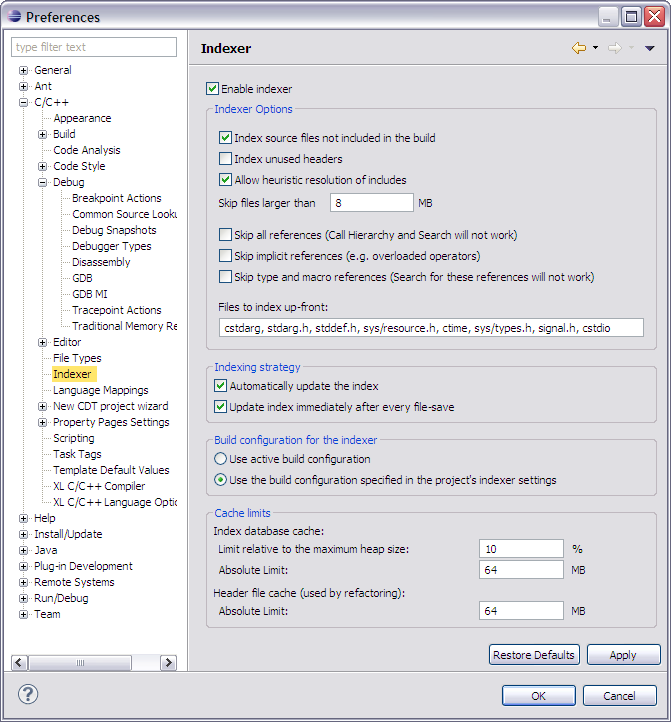

Indexer preferences (C/C++)
Use the Indexer preference panel to select the indexer used by default for new projects and configure its behavior.

| Option | Description |
|---|---|
| Select Indexer | Select the indexer to use by default for all new projects. |
| Index source files not included in the build | Activate this checkbox to index all source files used by the project. |
| Index unused headers | Activate this checkbox to index unused header files. |
| Allow heuristic resolution of includes | Activate this checkbox to allow the indexer to skip indexing duplicate include files. |
| Skip files larger than | Enter the maximum file size to skip when indexing. |
| Skip all references (Call Hierarchy and Search will not work) | Activate this checkbox to not index references to save space and gain performance. This prevents some portions of CDT from working, like Call Hierarchy and search for references. |
| Skip implicit references (e.g. overloaded operators) | Activate this checkbox to not index implicit references. |
| Skip type and macro references (Search for these references will not work) | Activate this checkbox to not index macro or type references. This prevents some portions of CDT from working, like Search. |
| Files to index up-front | Type a comma separated list of files that should always be indexed immediately. |
| Automatically update the index | Activate this checkbox to have the index automatically update as it requires. |
| Update index immediately after every file change | Activate this checkbox to force an index update whenever a file is saved. |
| Use active build configuration | Activate to always use the active build configuration indexer settings to build the index. |
| Use the build configuration specified in the project's indexer settings | Activate to always use the project's indexer settings to build the index. |
| Index database cache: Limit relative to the maximum heap size | Specify the relative size limit the index can reach based on the maximum heap size. |
| Index database cache: Absolute limit | Specify the maximum size the index database cache is limited to. |
| Header file cache: Absolute limit | Specify the maximum size the header file cache is limited to. |


Searching for C/C++ elements
Customizing the C/C++
editor

C/C++ search page, Search window
Search action
Search view